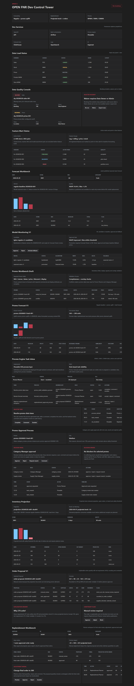

OPEN FNR Sprint 13: Replenishment Workbench V1
Аннотация: тестируем рабочее место планировщика пополнения: фильтры, final order отдельно от proposal, ручную корректировку, preview projected stock, mass approval readiness и audit old/new order.
UI-тестирование
- Открываем блок
Replenishment Workbench. - Проверяем фильтры Supplier, DC, Store, Category.
- Проверяем final orders: status, proposed quantity, final quantity, projected impact.
- Открываем adjustment modal и проверяем действия Preview, Approve, Reject, Escalate.
- Проверяем audit trail: old quantity, new quantity, reason.
- Проверяем, что approved order готов к async export, а manual_review требует решения.

Бизнес-процесс по шагам
| Шаг | Действие | Зачем | Результат |
|---|---|---|---|
| 1 | Planner открывает workbench и фильтрует proposals. | Рабочий поток начинается с отбора поставщика, РЦ, магазина и категории. | Фильтры доступны. |
| 2 | Planner сравнивает proposal и final order. | Исходное предложение нельзя перетирать ручной правкой. | Final order хранится отдельно. |
| 3 | Planner меняет final order 276 -> 300. | Коррекция покрывает promo stock-out. | Preview projected stock: -33 + 300 = 267. |
| 4 | Backend записывает audit event. | Решение должно быть объяснимо и восстанавливаемо. | Audit содержит old/new, reason, comment. |
| 5 | Viewer пытается изменить order. | Проверяем разделение просмотра и изменения. | HTTP 403. |
| 6 | Approved order пытаются изменить. | Нельзя менять заказ после approval без нового процесса. | HTTP 409. |
Автоматические проверки
| Команда | Результат |
|---|---|
python -m pytest |
101 passed |
npm.cmd run build |
Frontend build completed |